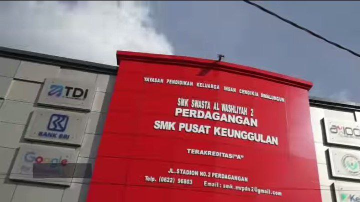
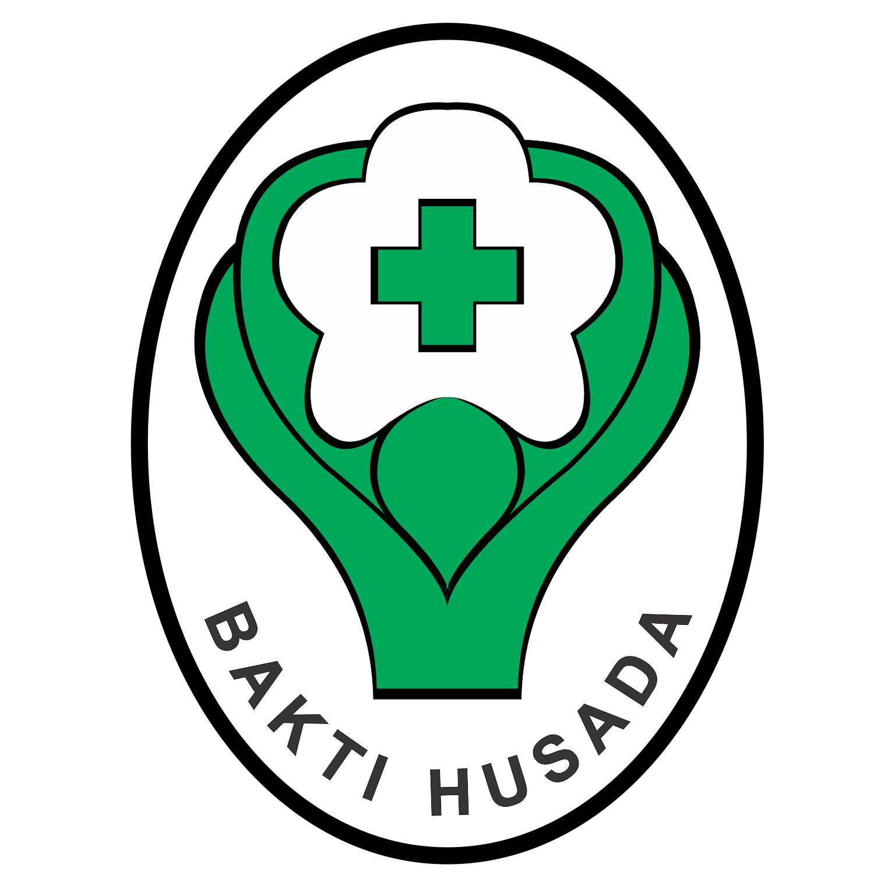

html> 
    <head> 
        <title>SMK AL WASHLIYAH 2 PERDAGANGAN</title> 
        <link href="style.css" rel="stylesheet"> 
    </head> 
    <body> 
        <div class="container"> 
            <nav> 
                <ul> 
                    <li class="logo"><a class="logo-text"> SMK AL WASHLIYAH 02 PERDAGANGAN</a></li> 
                    <li><a class="active" href="#home">BERANDA</a></li> 
                    <li><a href="#">MARTIKULASI</a></li> 
                    <li><a href="#">INFORMASI</a></li> 
                     <li><a href="#"></a>FASILITAS</li> 
                     <li><a href="#">KONTAK</a></li> 
                </ul> 
            </nav> 
        </div> 
    </body> 
</html> 
<div class="content1"> 
    <div class="text1"> 
         <div class="text"> 
               <p id="tag"> 
                    <mark>Teknologi Informasi dan Komunikasi</mark> 
               </p> 
               <h1>SEJARAH SMK AL WASHLIYAH 02 PERDAGANGAN</h1> 
               <p>Sejarah smk alwasliyah 2 perdagangan
                
            
                berdiri pada tanggal 2 september 1986 dengan nama sekolah Menengah Ekonomi Atas(SMEA)
                
                Pada tahun 1988 SMEA Al Washliyah 2 Perdagangan diganti namanya menjadi Sekolah Menengah Kejuruan (SMK) Al Washliyah 2 Perdagangan
            
                
            
                Kepala Sekolah
                - Nama : Henni Kurnia Sinaga, SE, M.Pd
                - NIP :  -
                - Nomor SK :  179/YPK-ICS/I/2017
                - Tanggal SK : 05 Januari 2017
 
                 
                .  
               </p> 
          </div> 
      </div> 
       
</div> 
<div class="content2"> 
    <div class="card"> 
        <h2><b>(PPLG)Pengembangan Perangkat Lunak dan Gim </b></h2>  
        <p>PPLG atau Pengembangan Perangkat Lunak dan Gim adalah sebuah jurusan di SMK (Sekolah Menengah Kejuruan). Jurusan ini mempelajari dan mendalami cara-cara mengembangkan perangkat lunak. Mulai dari pembuatan, pemeliharaan, manajemen kualitas, dan manajemen organisasi pengembangan perangkat lunak. 
 
            Selain itu, jurusan PPLG juga berhubungan dengan software komputer seperti pembuatan aplikasi, website, game dan semua yang berhubungan dengan pemrograman. Singkatnya, jurusan PPLG erat kaitannya dengan coding, desain, 
             
            </p>  
    </div> 
    <div class="card"> 
        <h2><b>(TJKT)Teknik Jaringan Komputer dan Telekomunikasi </b></h2>  
        <p>Teknik Jaringan Komputer dan Telekomunikasi  yang sebelumnya bernama Teknik Komputer Jaringan (TKJ) merupakan salah satu program keahlian di bidang teknologi dan informasi yang juga menjadi unggulan di SMK Negeri 4 Pekanbaru.
            Teknik Jaringan Komputer dan Telekomunikasi merupakan ilmu berbasis Teknologi Informasi dan Komunikasikemampuan algoritma, dan pemrograman komputer, perakitan komputer, Axioo menjadi</p>  
    </div>
    <div class="card">
        <h2><b>AXIO</b></h2> 
        <p>Axioo (ditulis axioo) adalah salah satu perusahaan elektronik di Indonesia yang memproduksi atau menyediakan komputer, laptop, ponsel cerdas, komputer tablet, dan sebagainya Brand AXIOO sendiri terbentuk pada tahun Brand AXIOO sendiri terbentuk pada tahun 2004, dimana Axioo menjadi brand lokal pertama yang meluncurkan notebook di Indonesia Axioo menjadi brand lokal pertama yang meluncurkan notebook di Indonesia Axioo menjadi brand lokal pertama yang meluncurkan notebook di Indonesia Sejak itu penjualan Axioo tumbuh pesat dari tahun ke </p> 

    </div> 
    <div class="card"> 
        <h2><b>(MPLB)Manajemen Perkantoran dan Layanan Bisnis</b></h2>  
        <p>Program Keahlian Manajemen Perkantoran dan Layanan Bisnis (MPLB) atau dulunya Otomatisasi dan Tata Kelola Perkantoran(OTKP) merupakan salah salah satu Program Kehalian di SMK swasta alwasliyah Pada Program Keahlian ini Pesrta Didik diberikan bekal tentang berbagai informasi layanan dibidang administrasi baik secara pengetahuan, keterampilan, dan sikap dalam menyelesaikan pekerjaan-pekerjaan perusahaan atau kantor. Mulai dari pembukuan, pengarsipan, hingga public relations.
  
</p>  
</div> 
</div> 
</div> 
<div class="content2"> 
<div class="card"> 
    <h2><b>(TF) TEKNOLOGI FARMASI</b></h2>  
    <p>Teknologi Farmasi adalah keilmuan yang lebih berorientasi pada pengembangan produk kefarmasian. teknologi farmasi mengkaji berbagai aspek-aspek yang berkaitan dengan ”sediaan farmasi” mulai dari pencarian hingga pembuatan, pengembangan bahan baku sampai menjadi sediaan farmasi yang siap digunakan, seperti obat-obatan, jamu atau produk kosmetika 
    </p>  
</div> 
<div class="card"> 
    <h2><b>(AKL)AKUNTANSI</b></h2> 
    <p>Akuntansi Keuangan Lembaga (AKL) merupakan sebuah jurusan yang mempelajari metode pencatatan, penggolongan, dan penyusunan laporan baik secara manual maupun secara komputerisasi serta perhitungan perpajakan. Bahkan terus dilakukan perkembangan terkait pemahaman akuntansi pemerintahan di Indonesia 
 
    </p> 
</div> 
<div class="card"> 
    <h2><b>(Lk)LAYANAN KESEHATAN</b></h2>  
    <p>Kompetensi Keahlian Asisten Keperawatan merupakan program yang bertujuan untuk menghasilkan tenaga ahli dalam asistensi keperawatan yang terampil dan kompeten di bidang pelayanan dasar keperawatan khususnya pemenuhan kebutuhan dasar manusia. Lulusan dari jurusan keperawatan diharapkan dapat memfasilitasi perawatan individu, keluarga, masyarakat,
 
</p>  
</div> 
</div> 
<div class="content3"> 
 
<div class="text2"> 
    <div class="text2"> 
        <h2>Kemampuan Lulusan</h2> 
        <p>Merancang dan membuat UI/UX atau prototype aplikasi<br> 
            Merancangan, membuat dan mengelola system dan database<br> 
            Merancang, membuat dan mengelola aplikasi berbasis desktop, web dan mobile<br> 
            Melakukan testing aplikasi, dll</p> 
    </div> 
</div> 
</div> 
<div class="content4"> 
<h2>Competency Based Training</h2> 
<p>Kegiatan Competency Based Training (CBT) bertujuan untuk menumbuhkembangkan karakter dan etos kerja (disiplin, tanggung jawab, jujur, kerjasama, kepemimpinan, dan lain-lain) yang dibutuhkan DU/DI serta meningkatkan kualitas hasil pembelajaran.  
    Kegiatan CBT Rekayasa Perangkat Lunak meliputi kegiatan dimulai dari mencari proyek baik dari internal/eksternal sekolah, mengidentifikasi kebutuhan pemberi proyek (requirements), melakukan desain proyek (design), melakukan implementasi (coding), dan melakukan pengujian proyek (testing).</p> 
</div> 
<div class="content5"> 
<h1>Detail Kompetensi KEAHLIAN</h1> 
<div class="responsive"> 
    <div class="gallery"> 
        <a target="_blank" href="img/rpl.png"> 
             
        </a> 
        <div class="desc">RPL</div> 
    </div> 
</div> 
<div class="responsive"> 
    <div class="gallery"> 
        <a target="_blank" href="img/TJKT.jpg"> 
             
        </a> 
        <div class="desc">TJKT</div> 
    </div> 
</div> 
<div class="responsive"> 
    <div class="gallery"> 
        <a target="_blank" href="img/AXSIO.jpg"> 
             
        </a> 
        <div class="desc">AXSIO</div> 
    </div> 
</div> 
<div class="responsive"> 
    <div class="gallery"> 
        <a target="_blank" href="img/MPLB.jpg"> 
             
        </a> 
        <div class="desc">MPLB</div> 
    </div> 
</div> 
<div class="responsive"> 
    <div class="gallery"> 
        <a target="_blank" href="img/AKL.jpg"> 
             
        </a> 
        <div class="desc">AKUNTANSI</div> 
    </div> 
</div> 
<div class="responsi 
</div> 
</div> 
<div class="responsive"> 
    <div class="gallery"> 
        <a target="_blank" href="img/lk.png"> 
             
        </a> 
        <div class="desc">LAYANAN KESEHATAN</div> 
    </div> 
    </div> 
    <div cla
    ss="responsive"> 
    <div class="gallery"> 
        <a target="_blank" href="img/FARMASI.jpg"> 
             
        </a> 
        <div class="desc">TEKNOLOGI FARMASI</div> 
    </div> 
</div> 
</div> 
<div class="clearfix"></div> 
<footer class="footer-main"> 
<div class="footer-grid">    
      <section class="footer-1"> 
        <h4>Tentang RPL</h4> 
          <p>Sejarah</p> 
          <p>Kompetensi</p> 
          <p>Profesi</p> 
          <p>Kerjasama</p> 
      </section> 
     <section class="footer-2"> 
        <h4>Alamat</h4> 
        <p>Jl. Stadion No. 2 Perdagangan 21184</p> 
        <h4>Telepon</h4> 
        <p>(0622) 96803 </p> 
      </section> 
     <section class="footer-3"> 
       <h4>Sosial Media</h4> 
         <p>Instagram : @smkaw2</p> 
         <p>Youtube : SMK Swasta Al Washliyah 2 Perdagangan</p> 
     </section> 
</div>
